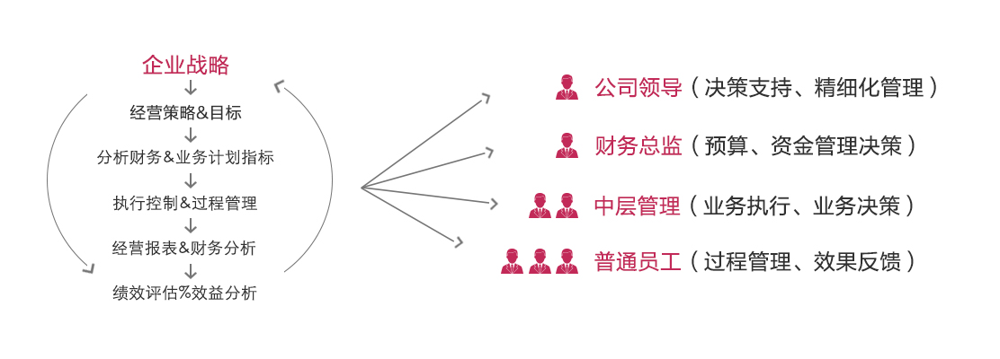
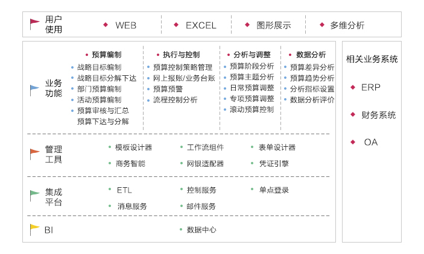
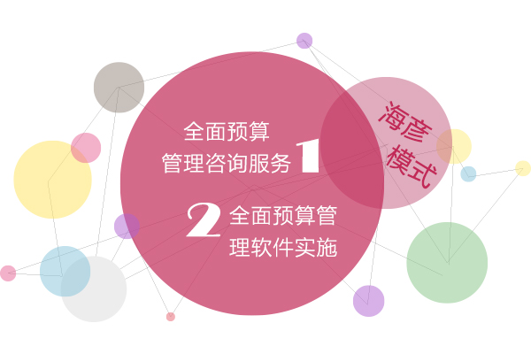

以互联网技术的发展和应用为中心，从典型的技术驱动发展模式向技术驱动与应用驱动相结合的模式转变。
1、什么是统一运营管理平台

2、统一运营管理平台的作用
● 是企业绩效管理、战略执行的良好工具;
● 基于业务数据流和财务数据流、通讯流的全面闭环的业务监控分析系统，让信息有效的在流程各环节中流转—财务、销售、投研、运营保障等各部门的业务数据，从资金、渠道、产品、区域、部门等进行立体网状的多维综合分析;
● 确保全流程各环节的行动服务于企业战略目标的实现，使企业从战略到经营目标和策略的制订，各环节执行控制、绩效评估和企业价值评估风险控制形成企业经营统一整体;
● 企业的各级决策者获得对业务运作的洞察力，促使决策者做出基于事实、实际投入产出分析的决策，达到精确绩效的目的;
● 管理、保护、积累企业知识，扩展搜索，使其成为员工获取信息和专业知识的综合方法;
● 提供良好的个人和组织协作的方式，从而加快市场响应速度，鼓励创新。
1、产品概述
海彦全面预算管理系统包括四大部分：预算编制、预算控制、分析与调整、数据分析，预算实现功能流程如下图所示：
2、功能架构图

3、海彦模式

4、海彦特点
1. 高级企业管理顾问师参与;
2. 开放式平台集成解决方案
3. 技术团队经验丰富;
4. 售后服务有保障。